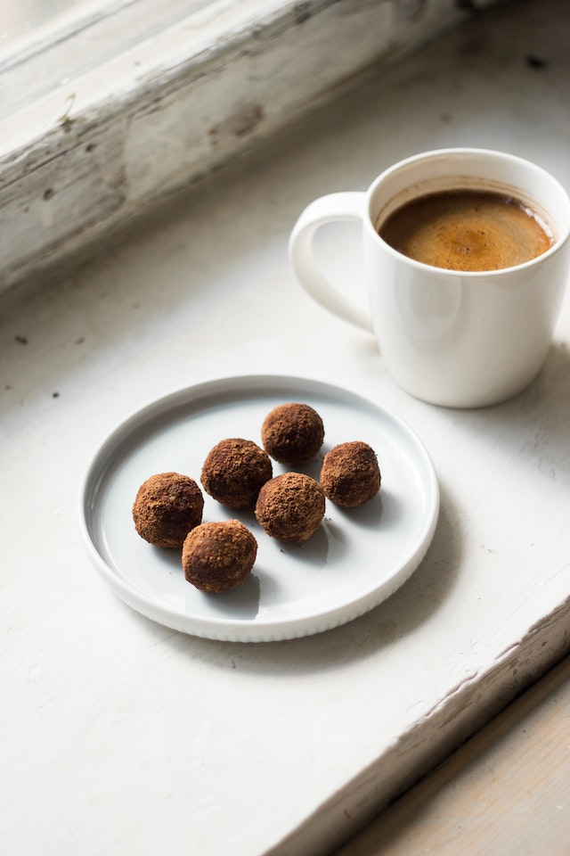

Swedish Chocolate Balls

Description
The following recipe contains a list of ingredients needed and step-by-step instructions to make the delicious swedish chocolate balls, also known as chokladbollar. The measurements below are intended for 16 balls.
Ingredients
- 1 ½ cups quick-cooking rolled oats
- ½ cup white sugar
- 3 ½ tablespoons cocoa powder
- 1 pinch kosher salt
- 11 pinch cayenne pepper
- ¼ cup unsalted butter, softened
- ¼ cup coconut oil, at room temperature
- 1 teaspoon vanilla extract
- 2 tablespoons strong brewed coffee
- ½ cup unsweetened grated coconut, or as needed
Steps
- First Step: Preheat the oven to 350 degrees FHeat a pan over medium heat and add oats. Toss and shake until fragrant and lightly toasted, 5 to 7 minutes.
- Second Step: Combine sugar, cocoa powder, salt, cayenne, butter, coconut oil, vanilla extract, and coffee in a bowl. Add the oats and mix until thoroughly combined.
- Third Step: Portion dough into balls using a sorbet scoop. Roll balls in grated coconut and transfer to a parchment-lined baking pan. Let them firm up in the fridge for 15 to 20 minutes.